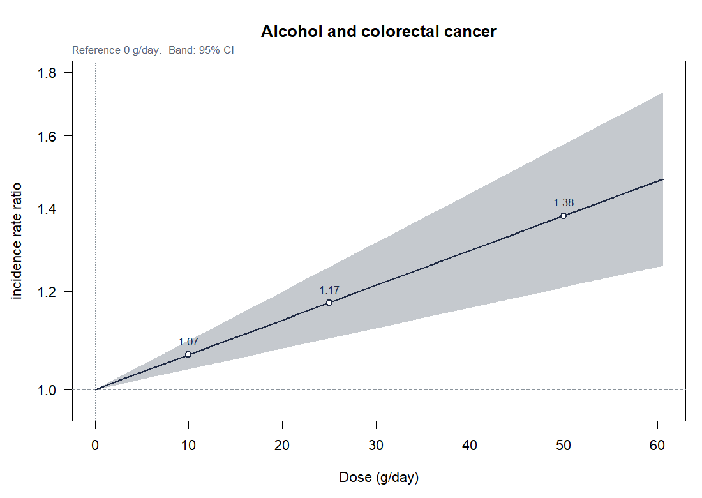
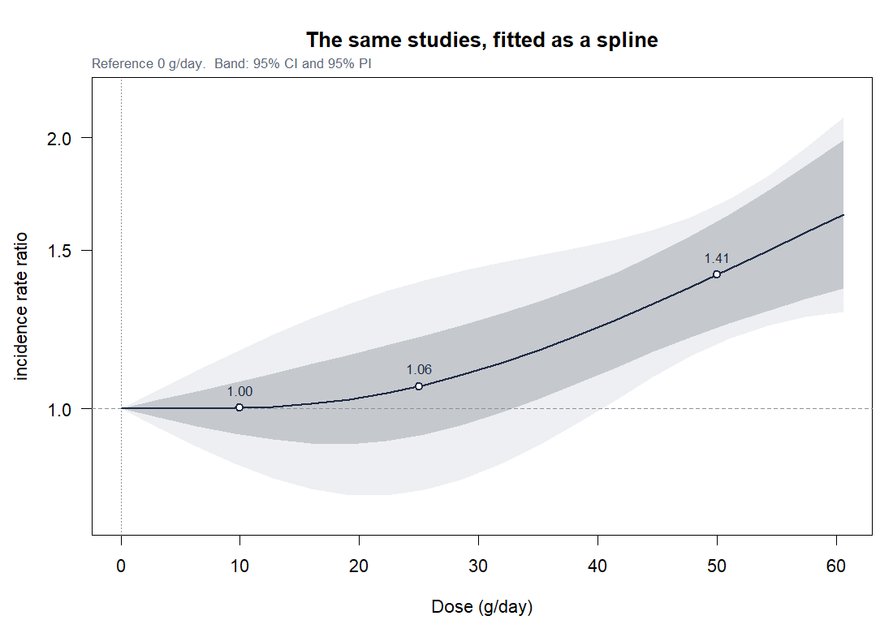

One call, the whole answer, and a shape you had to name
library(easyDR) fit <- easydr(alcohol_cancer, sm = "IRR", shape = "linear", dose.unit = "g/day", at = c(10, 25, 50)) fit
Eight prospective cohorts of alcohol intake and colorectal cancer, from Orsini and colleagues. The whole answer prints at once: nothing else has to be called to write the results paragraph.
| Argument | Does what |
|---|---|
| sm | The measure, and so the columns, the covariance and the scale. |
| shape | Required. No default and no guess. |
| at | Doses to report effects at. Five across the range if you say nothing. |
| dose.unit | A label. It changes no number. |
| method.tau | REML by default; ML, mm and fixed available. |
| proc | Two-stage by default; one-stage for sparse tables. |
| common, random | Which model to fit, not which to display. |
IRR of 1.006 per 1 g/day does not mean drinkers are
at 1.006 times the rate. It means each gram per day multiplies the
rate by about 1.006, measured against the reference dose, which is
why the reference is always printed. Change the reference and every
predicted effect changes with it.
It would be easy to rank the candidate shapes and fit the winner. easyDR does not, because the ranking is only defensible under conditions the default call does not meet.
So the shape is yours, chosen for reasons you can write down: the
biology, the dose range your readers care about, what comparable
reviews did. easydr_select() runs the comparison
properly when you want it, refitting one-stage by maximum likelihood
and saying so.
sel <- easydr_select(alcohol_cancer, sm = "IRR", dose.unit = "g/day")
Changing one argument changes the model and nothing else. A curve prints a departure-from-linearity test, which a straight line cannot, and prints no single slope, because no single number describes it.

shape = "linear": one slope, read at 10, 25
and 50 g/day.
shape = "rcs", with the prediction band shown.
Wider, because it describes where a new study would fall.